How to use this lesson
§0 · From last time. Lesson 14.1 explained content blocks and streaming. Lesson 3.1 introduced prompt caching as a 10× cost lever. Now we close the gap — exactly how
cache_controlworks, the 4-block hierarchy, TTL behaviour, what invalidates, and the math for deciding when caching pays off.
Business Scenario
Helix Research, Tuesday standup.
Tom Rivera looks at the cost dashboard. The literature-synthesis agent is running at $0.18 per query — twice the budget Maya signed off on. Tom thinks: "We're caching, right? Cost should be 10× cheaper."
Inspection of the SDK calls reveals: the team passes a 14K-token system prompt with the regulatory disclaimer + 12 example traces + tool schemas. No cache_control blocks. Every call pays full input cost on every byte of that 14K-token prefix.
Tom asks: "Where do I put the cache_control? Just one breakpoint or several? What's the rule?"
Bridge to Topic
Prompt caching isn't automatic — you have to opt in by placing cache_control blocks. There's a 4-block hierarchy, a 5-minute TTL (with a 1-hour beta), and specific invalidation rules. Knowing them lets you architect a 10× cost reduction; missing them means you pay full price.
Mind Map

Mermaid source
mindmap
root((Prompt Caching))
Mechanics
cache_control breakpoint
up to 4 blocks
cache_creation vs cache_read
5-min TTL default
1-hour TTL beta
Where to place
tools block
system prompt
messages prefix
conversation history
Invalidation
any change before breakpoint
tool list change
system change
model change
Pricing math
cache_write cost (1.25x)
cache_read cost (0.1x)
break-even threshold
Elaboration
4.1 The cache_control block — what it is
A cache_control block is a marker you attach to any content block telling the API: "treat everything from the start of the prompt up to and including this point as a cacheable prefix."
{
type: "text",
text: SYSTEM_PROMPT_WITH_LONG_INSTRUCTIONS,
cache_control: { type: "ephemeral" }
}
The "ephemeral" type means 5-minute TTL (the default; refreshes on hit). The beta cache_control: { type: "ephemeral", ttl: "1h" } extends to 1 hour at a higher write cost — useful for long-running batch jobs.
4.2 The 4-block hierarchy
You can have up to four cache_control breakpoints per request. The standard layout:
[ tools ] <-- breakpoint 1: cache the tool definitions
[ system: messages ] <-- breakpoint 2: cache the system prompt
[ messages[0..N-2] ] <-- breakpoint 3: cache the conversation history
[ messages[N-1] ] <-- breakpoint 4: cache up to the latest user turn
Each subsequent breakpoint includes everything before it. So if your system prompt is unchanged but the user adds a new turn, breakpoints 1 and 2 still hit; breakpoint 3 catches up to the new turn (becomes a cache write); breakpoint 4 includes the new turn (also a write).
This staged cache is the architect's move: most of the prompt comes from cache; only the new tail is freshly billed.
4.3 Cache lookup mechanics
On every request the API computes a hash of the prompt content up to each cache_control breakpoint. If a hash matches an existing cache entry (within the TTL), it's a cache read — billed at 10% of normal input cost. If it doesn't match, it's a cache write — billed at 125% of normal input cost (first time only).
Normal input: 1.00 × Pin
Cache write: 1.25 × Pin (first request)
Cache read: 0.10 × Pin (subsequent requests within TTL)
The 25% premium on writes is why you need enough requests to pay back the write before the TTL expires. Math: break even when (N × 0.10 + 1.25) < N → N ≥ 1.39 → 2 requests within 5 minutes pay back the cache. Past that, you're saving.
4.4 What invalidates the cache
Any byte difference before a breakpoint invalidates that breakpoint and all subsequent ones:
| Change | Invalidates |
|---|---|
| Edit one word in the system prompt | All breakpoints (full re-write) |
| Add a tool to the tools array | All breakpoints |
| Remove tool description's description field | All breakpoints (yes, even cosmetic) |
| User adds a new turn | Breakpoints after the conversation breakpoint |
| Change model | All breakpoints (separate cache per model) |
Change cache_control block position |
Breakpoints from that point onward |
Architect rule: changes that look cosmetic (whitespace, comments, reorder examples) invalidate the cache. Be disciplined about prefix stability. Use code review to catch accidental prefix edits.
4.5 TTL behaviour
- Default: 5 minutes. Refreshed on every cache hit — busy caches stay warm indefinitely.
- Beta
ttl: "1h": 1 hour. Costs 2× the write price (2.5× normal input vs 1.25× for ephemeral). Useful for batch jobs that span more than 5 min between calls.
Cold-cache periods (e.g., first call of the day) always pay the write price. Plan for this in cost forecasting.
Problem Statement
Help Tom fix Helix's $0.18/query cost. The system prompt is 14K tokens (regulatory + tool schemas + 12 examples). Average query has 800 input tokens of new content + 1500 output tokens. Volume: 14K queries/week.
- Where should
cache_controlbreakpoints go? - What's the projected cost per query after caching?
- What's the break-even latency between calls for the cache to pay off?
Solution Walkthrough
Breakpoint placement
await client.messages.create({
model: "claude-sonnet-4-6",
max_tokens: 2048,
tools: [
...TOOLS_ARRAY,
// breakpoint 1: cache the tools
// (cache_control goes on the LAST element of the tools array)
],
system: [
{ type: "text", text: REGULATORY_DISCLAIMER + EXAMPLES_BLOCK,
cache_control: { type: "ephemeral" } }, // breakpoint 2
],
messages: [
// optional breakpoint 3 on the most recent assistant turn for multi-turn caching
{ role: "user", content: query }, // not cached — varies per request
],
});
For Tom's single-turn case, two breakpoints suffice: tools + system.
Cost calculation
Sonnet 4.6 pricing (per million tokens):
- Pin = $3.00
- Pcache_read = $0.30 (10% of Pin)
- Pcache_write = $3.75 (125% of Pin)
- Pout = $15.00
Before caching (current state):
- Input: 14,000 + 800 = 14,800 × $3.00/M = $0.0444
- Output: 1,500 × $15.00/M = $0.0225
- Total per query: $0.067 + Anthropic SDK overhead ≈ $0.18 (something inflated — maybe also using Opus on hard queries; need to investigate)
After caching (warm cache):
- Cached input: 14,000 × $0.30/M = $0.0042
- Uncached input: 800 × $3.00/M = $0.0024
- Output: 1,500 × $15.00/M = $0.0225
- Total per query: $0.029 (4.6× cheaper)
Cache-write requests (first call after invalidation):
- Cached input written: 14,000 × $3.75/M = $0.0525
- Uncached input: 800 × $3.00/M = $0.0024
- Output: 1,500 × $15.00/M = $0.0225
- Total: $0.077 (slightly more than baseline due to 25% write premium)
Break-even
With 14,000 cached input tokens:
- Saving per warm-cache hit: $0.0444 − $0.0066 = $0.0378
- Premium on cache write: $0.0525 − $0.0420 = $0.0105
- Break-even: 1 warm hit pays back the write
At 14K queries/week ≈ 83 queries/hour, the cache is always warm during business hours. Cold-cache writes are once per morning. Total saving: ~$330/week. Annualised: ~$17K. Free.
Mathematical Foundation
7.1 Generalised cost formula
For a request with Tprefix tokens before the breakpoint and Tnew tokens after, with cache hit probability h:
expected_input_cost = h × (Tprefix × Pcache_read + Tnew × Pin)
+ (1 − h) × ((Tprefix + Tnew) × Pin)
expected_total = expected_input_cost + Tout × Pout
For high-hit-rate workloads (h ≈ 0.95+), the cost approaches the cached-only value rapidly.
7.2 Break-even N
For a single cached prefix of Tprefix tokens, called N times in the TTL:
without_cache_cost = N × Tprefix × Pin
with_cache_cost = 1.25 × Tprefix × Pin + (N-1) × 0.10 × Tprefix × Pin
with_cache < without_cache
⇒ 1.25 + 0.10(N-1) < N
⇒ N > 1.39
Cache is cheaper if you hit it at least twice in the TTL. Any agent invoked more than once every ~3 minutes benefits.
7.3 1-hour TTL break-even
The 1-hour beta costs 2× the standard write (2.5× normal Pin). Break-even:
2.5 + 0.10(N-1) < N
⇒ N > 2.67
1-hour TTL is cheaper if you hit at least 3 times in the hour. Useful for batch jobs with sparse but regular access patterns.
Technical Deep-Dive
8.1 Where exactly does cache_control attach?
| Location | Syntax |
|---|---|
tools array |
Add cache_control to the last tool you want cached. Everything before is included. |
system (text-array form) |
Add cache_control to the system text block. |
messages (a specific block) |
Add cache_control to a content block within a message. Common: cache the last assistant turn for multi-turn flows. |
If system is a string (not an array of blocks), you can't add cache_control to it directly — convert to the array form.
8.2 Verifying cache behaviour
The response's usage field tells you exactly what happened:
response.usage = {
input_tokens: 800, // tokens NOT served from cache
cache_creation_input_tokens: 0, // tokens just written to cache (0 = no write this time)
cache_read_input_tokens: 14000, // tokens served from cache (the savings!)
output_tokens: 1500,
};
Track these three numbers in your observability spans. Cache hit rate = cache_read_input_tokens / (cache_read_input_tokens + input_tokens) (roughly).
8.3 Multi-turn caching pattern
For a multi-turn chat where each user turn extends the conversation, place a breakpoint on the last assistant turn of the prior context:
messages: [
{ role: "user", content: "Q1" },
{ role: "assistant", content: [{ type: "text", text: "A1", cache_control: { type: "ephemeral" } }] }, // breakpoint
{ role: "user", content: "Q2" }, // new — not cached
]
Now the next request can cache up to and including the cached assistant turn. Move the breakpoint forward as the conversation grows.
8.4 The 1024-token minimum
Cache writes have a minimum of 1024 tokens of cached content. Smaller breakpoints are silently ignored (no error, just no caching). Make sure your cacheable prefix is large enough — typically you'd cache tool schemas + system prompt together for this reason.
8.5 Caching with extended thinking
Cache the prefix up to (but not including) the user query, then let the model think + tool-use as normal. Thinking blocks themselves cannot be cached (they're new each turn) but everything before them can.
What This Unlocks
- Lesson 14.3 uses caching cost math when deciding model tier — sometimes Sonnet+cache is cheaper than Haiku+no-cache.
- Lesson 14.5 uses cache hit rate as a production metric in capacity planning.
- Module 9's cost-optimization patterns now have explicit
cache_controlmechanics to implement.